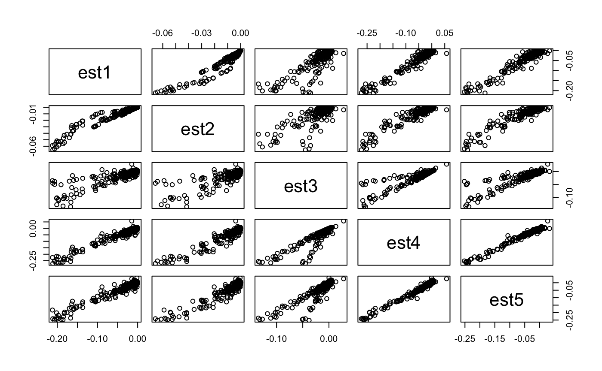
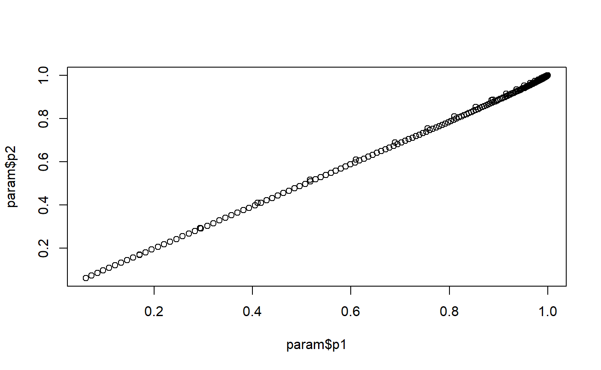
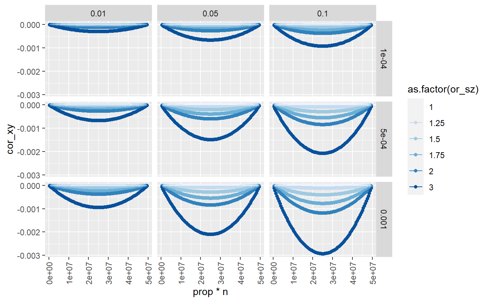
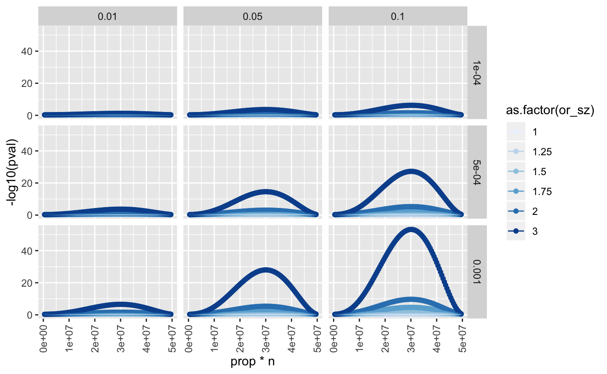
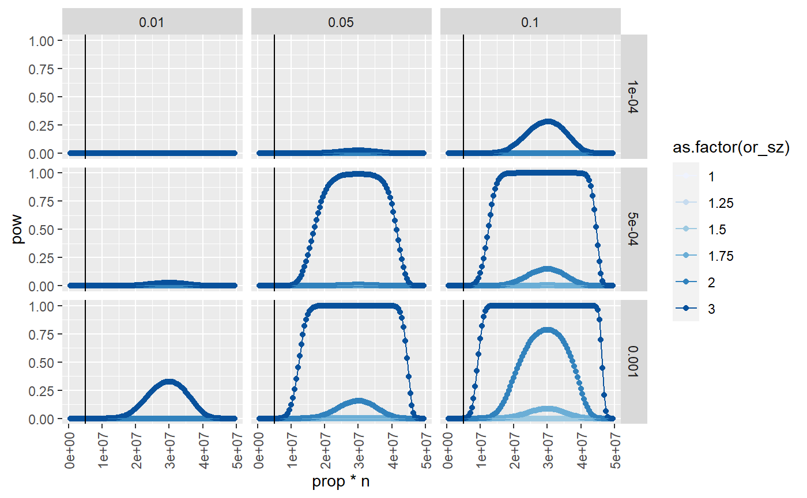

vignettes/collider_ascertainment.rmd
collider_ascertainment.rmdsuppressWarnings(suppressPackageStartupMessages({
library(knitr)
library(ggplot2)
library(dplyr)
library(pwr)
}))
knitr::opts_chunk$set(echo=TRUE, message=FALSE, warning=FALSE, dev="png")The purpose of expanding sample sizes for genome-wide association studies, now happening at a rapid rate with the advent of population scale biobanks, is to detect more and more genetic variants associated with complex traits of interest. With 5 million samples, the effect sizes detectable are extremely small. While this provides exquisite power to detect extremely small effects, it opens up new avenues of subtle bias. One such problem arises because the recruited individuals are not representative of the general population. If they are ascertained, for example for higher education levels, collider bias will induce correlations amongst all the causes of higher education levels within the sample. This problem is typically ignored because the magnitude of the collider bias is relatively small, and unlikely to be detectable at genome-wide significance thresholds. However, with extreme statistical power that safety may disappear.
The UK has a population of 50 million adults. In the next major genotyping effort, 5 million will be sampled and genotyped. In principle this is to improve statistical power for GWAS. In many cases the GWAS signals of interest are only those that are very strongly associated, e.g. with \(p < 5e^{-8}\). This likely guards against a lot of the potential problems that can arise due to subtle sampling issues such as collider bias in ascertained samples.
Question: When power to detect very small effects gets large, is the problem of collider bias arising due to ascertainment in GWAS now a realistic problem?
Question: As more of the population is sampled, how does this bias change in power and magnitude?
Use educational attainment (\(S\)) as the variable that influences ascertainment, and ascertainment is a binary variable \(z\) which indicates if the individual is in the sample. Suppose that educational attainment influences the probability of being recruited into the sample, or at least having non-missing data in the sample. The logistic function can be used to model the relationship of influence of educational attainment on being sampled
\[ logit(\mu_i) = \alpha + \delta S_i \]
where \(\mu_i\) is the probability for the \(i\)th individual being included in the sample based on their value of \(S\), and the intercept \(\alpha\) indicates the proportion of individuals in the population who are sampled, \(p\) by:
\[ p = \frac{1}{1 + e^{-\alpha}} \]
The (biased) estimate of the effect of a genetic variant (\(G\)) on some predictor of education (\(X\)), when estimated only amongst recruited samples (\(Z = 1\)), is given by
\[ \hat{\beta}_{GX} = \frac{\sigma_{GX}/\sigma_{G} - \sigma_{GZ}\sigma_{XZ} / \sigma_{Z}^2}{1 - (\sigma_{GZ}/\sigma_{Z})^2} \]
Given the relationship between education and recruitment, we can parameterise the bias in terms of:
The value of \(Z\) indicates if an individual is present in the sample, and this is a function of
\[ \sigma_{GZ} = cov(G, \frac{p}{1-p}\delta S) \]
\[ \hat{\beta}_{GX} = \frac{\sigma_{GX}/2m(1-m) - cov(G, \frac{p}{1-p}\delta S)cov(X, \frac{p}{1-p}\delta S) / \sigma_{Z}^2}{1 - (cov(G, \frac{p}{1-p}\delta S)/\sigma_{Z})^2} \]
There are two different methods for estimating the collider effect.
Groenwold, Palmer and Tilling (2020, https://osf.io/vrcuf/) gives:
\[ \hat{\beta}_{xy|s} = \frac{\beta_{xy} \sigma^2_{s} \sigma^2_{x} - \beta_{xs} \beta_{ys} \sigma^2_x \sigma^2_y}{\beta^2_{ys} \sigma^2_x \sigma^2_y + \sigma^2_s \sigma^2_x} \]
Pearl (2013, https://ftp.cs.ucla.edu/pub/stat_ser/r409_submitted_corrected.pdf) gives:
\[ \hat{\beta}_{xy|s} = \frac{\sigma_{xy} - \sigma_{sy} \sigma_{sx}}{1 - \sigma^2_{sx}} \]
This assumes error terms are equal I think.
I get differing results between these solutions when the variances of \(x\) and \(y\) change. An alternative to the first one is:
\[ \hat{\beta}_{xy|s} = \frac{\beta_{xy} \sigma^2_{s} \sigma^2_{x} - \beta_{xs} \beta_{ys} \sigma^2_x \sigma^2_y}{\beta^2_{ys} \sigma^2_x \sigma^2_y + \sigma^2_x} \]
Simulate continuous collider that influences a continuous conditioning variable
n <- 100000
x <- rnorm(n)
y <- rnorm(n)
b_xy <- 0
b_xs <- 6
b_ys <- 8
b_sz <- 5
s <- x * b_xs + y * b_ys + rnorm(n)
z <- s * b_sz + rnorm(n)Bias in x-y assoc when conditioning on s
(b_xy * var(s) * var(x) - b_xs * b_ys * var(x) * var(y)) / (b_ys^2 * var(x) * var(y) + var(x))
#> [1] -0.7384386
lm(y ~ x + s)$coef[2]
#> x
#> -0.7386883Bias in x-y assoc when conditioning on z
b_xz <- lm(z ~ x)$coef[2]
b_yz <- lm(z ~ y)$coef[2]
(b_xy * var(z) * var(x) - b_xz * b_yz * var(x) * var(y)) / (b_yz^2 * var(x) * var(y) + var(x))
#> x
#> -0.7506288
lm(y ~ x + z)$coef[2]
#> x
#> -0.7382585Is the same.. why?
Now make x binary. This also changes its mean and variance. Change y variance also
n <- 100000
maf <- 0.3
x <- rbinom(n, 2, maf)
y <- rnorm(n, sd=3)
s <- x * 6 + y * 8 + rnorm(n)
z <- s * 5 + rnorm(n)Bias in x-y assoc when conditioning on s
(b_xy * var(s) * var(x) - b_xs * b_ys * var(x) * var(y)) / (b_ys^2 * var(x) * var(y) + var(x))
#> [1] -0.7487006
lm(y ~ x + s)$coef[2]
#> x
#> -0.7487623Bias in x-y assoc when conditioning on z
b_xz <- lm(z ~ x)$coef[2]
b_yz <- lm(z ~ y)$coef[2]
(b_xy * var(z) * var(x) - b_xz * b_yz * var(x) * var(y)) / (b_yz^2 * var(x) * var(y) + var(x))
#> x
#> -0.7538848
lm(y ~ x + z)$coef[2]
#> x
#> -0.7488729Now make z binary
x <- rbinom(n, 2, maf)
y <- rnorm(n)
s <- x * b_xs + y * b_ys
l <- b_sz*s
pr <- 1 / (1 + exp(-l))
z <- rbinom(n, 1, pr)
table(z)
#> z
#> 0 1
#> 34860 65140Condition on z
b_xz <- lm(z ~ x)$coef[2]
b_yz <- lm(z ~ y)$coef[2]
(b_xy * var(z) * var(x) - b_xz * b_yz * var(x) * var(y)) / (b_yz^2 * var(x) * var(y) + var(x)*var(z))
#> x
#> -0.2348401
(b_xy * var(z) * var(x) - b_xz * b_yz * var(x) * var(y)) / (b_yz^2 * var(x) * var(y) + var(x))
#> x
#> -0.0716148
lm(y ~ x + z)$coef[2]
#> x
#> -0.389693
lm(y[z==1] ~ x[z==1])$coef[2]
#> x[z == 1]
#> -0.3468017Now it’s weird because it seems to need the var(z) term in the denominator.. compare different methods:
library(dplyr)
param <- expand.grid(
n = 100000,
maf = c(0.1, 0.5, 0.7),
b_xy = c(0, 0.3),
b_xs = c(0.1, 0.6),
b_ys = c(0.4, 0.8),
b_sz = c(0.4, 0.8),
sdy = c(1, 3),
alpha = c(0, 1, 2),
sim=1
)
out <- list()
for(i in 1:nrow(param))
{
message(i)
pa <- param[i, ]
x <- rbinom(pa$n, 2, pa$maf)
y <- rnorm(pa$n, sd=pa$sdy)
s <- x * pa$b_xs + y * pa$b_ys
l <- pa$alpha + pa$b_sz*s
pr <- 1 / (1 + exp(-l))
z <- rbinom(pa$n, 1, pr)
b_xz <- cov(x,z) / var(x)
b_yz <- cov(y,z) / var(y)
pa$est1 <- (b_xy * var(z) * var(x) - b_xz * b_yz * var(x) * var(y)) / (b_yz^2 * var(x) * var(y) + var(x)*var(z))
pa$est2 <- (b_xy * var(z) * var(x) - b_xz * b_yz * var(x) * var(y)) / (b_yz^2 * var(x) * var(y) + var(x))
pa$est3 <- (cov(x,y)/sd(x) - cov(x,z) * cov(y, z) / var(z)) / (1 - cov(x,z)^2/var(z))
pa$est4 <- lm(y ~ x + z)$coef[2]
pa$est5 <- cov(y[z==1], x[z==1]) / var(x[z==1])
out[[i]] <- pa
}
out <- bind_rows(out)
subset(out, select=c(est1, est2, est3, est4, est5)) %>% pairs
subset(out, select=c(est1, est2, est3, est4, est5)) %>% cor
#> est1 est2 est3 est4 est5
#> est1 1.0000000 0.9622456 0.8658597 0.9754467 0.9648007
#> est2 0.9622456 1.0000000 0.8332689 0.9578150 0.9534038
#> est3 0.8658597 0.8332689 1.0000000 0.9048680 0.8958432
#> est4 0.9754467 0.9578150 0.9048680 1.0000000 0.9918991
#> est5 0.9648007 0.9534038 0.8958432 0.9918991 1.0000000Ok just use the original version in Groenwold 2020, it has the best correlation across parameters with the actual conditioning method.
Can we present in terms of \(s\) instead of \(z\)? What is cov(x,z) in terms of cov(x,s)
\[ cov(X,Z) = cov(X,\beta S) \]
\[ \beta = cov(S,Z) / var(S) \]
x <- rbinom(n, 2, maf)
y <- rnorm(n)
s <- x * b_xs + y * b_ys
l <- b_sz*s
pr <- 1 / (1 + exp(-l))
z <- rbinom(n, 1, pr)
table(z)
#> z
#> 0 1
#> 34608 65392
b_xz <- lm(z ~ x)$coef[2]
b_yz <- lm(z ~ y)$coef[2]
(b_xy * var(z) * var(x) - b_xz * b_yz * var(x) * var(y)) / (b_yz^2 * var(x) * var(y) + var(x)*var(z))
#> x
#> -0.2361179
(b_xy * var(z) * var(x) - b_xz * b_yz * var(x) * var(y)) / (b_yz^2 * var(x) * var(y) + var(x))
#> x
#> -0.0716572
lm(y ~ x + z)$coef[2]
#> x
#> -0.3981225
lm(y[z==1] ~ x[z==1])$coef[2]
#> x[z == 1]
#> -0.3528441Obtain \(\beta_{yz}\) in terms of \(\beta_{ys}\) and \(\beta_{sz}\)
b_xs = cov(x,s)/var(x)
b_ys = cov(y,s)/var(y)
b_sz = cov(s,z)/var(s)
(b_xy * var(z) * var(x) - b_xz * b_yz * var(x) * var(y)) / (b_yz^2 * var(x) * var(y) + var(x)*var(z))
#> x
#> -0.2361179
(b_xy * var(z) * var(x) - b_xs * b_sz * b_ys * b_sz * var(x) * var(y)) / ((b_ys * b_sz)^2 * var(x) * var(y) + var(x)*var(z))
#> [1] -0.2431297Present b_sz in terms of OR in logistic regression model
x <- rbinom(n, 2, maf)
y <- rnorm(n)
s <- x * b_xs + y * b_ys
l <- b_sz*s
pr <- 1 / (1 + exp(-l))
z <- rbinom(n, 1, pr)
b_xz <- lm(z ~ x)$coef[2]
b_yz <- lm(z ~ y)$coef[2]
logor = glm(z ~ s, family="binomial")$coef[2]
# estimate lm
bhat_sz = lm(z ~ s)$coef[2]
# convert beta to logor
prop <- sum(z == 1) / length(z)
mu <- prop * (1 - prop)
# get beta from logOR
logor * mu
#> s
#> 0.01040882
cov(s,z)/var(s)
#> [1] 0.01007026
lm(y[z==1] ~ x[z==1])$coef[2]
#> x[z == 1]
#> -0.0296369
b_xs = cov(x,s)/var(x)
b_ys = cov(y,s)/var(y)
b_sz = cov(s,z)/var(s)
(b_xy * var(z) * var(x) - b_xz * b_yz * var(x) * var(y)) / (b_yz^2 * var(x) * var(y) + var(x)*var(z))
#> x
#> -0.01911742
(b_xy * var(z) * var(x) - b_xs * b_sz * b_ys * b_sz * var(x) * var(y)) / ((b_ys * b_sz)^2 * var(x) * var(y) + var(x)*var(z))
#> [1] -0.01876434
(b_xy * var(z) * var(x) - b_xs * logor * mu * b_ys * logor * mu * var(x) * var(y)) / ((b_ys * logor * mu)^2 * var(x) * var(y) + var(x)*var(z))
#> s
#> -0.02001254Quick recap:
$$ \begin{aligned} {xy|s} &= \ {xy|z} &= \
\end{aligned} $$
So now we need to present betas in terms of variances. What explains \(S\)?
\[ \begin{aligned} S_i &= \beta_{SX} X_i + \beta_{SY} Y_i + e_i \\ R^2_{S} &= \frac{2 \beta^2_{SX} m(1-m) + \beta^2_{SY} Var(Y)}{Var(Y)} \\ V_S &= \frac{2\beta^2_{SX} m(1-m) + \beta^2_{SY}Var(Y)}{R^2_S} \end{aligned} \]
So Vx = 2m(1-m), Vy is fixed, and Vs will depend on Vx and the effects.
n <- 10000
maf <- 0.3
rsq_gs <- 0.1
rsq_xs <- 0.2
vx <- 1
vs <- 1
rsq_s <- rsq_gs + rsq_xs
g <- rbinom(n,2,maf)
x <- rnorm(n)
b_gs <- sqrt(rsq_gs * vs / (2*maf*(1-maf)))
b_xs <- sqrt(rsq_xs * vs / vx)
ve <- vs - b_gs^2 * 2*maf*(1-maf) - b_xs^2 * vx
s <- g * b_gs + x * b_xs + rnorm(n, sd=sqrt(ve))
var(s)
#> [1] 0.976991
cor(g, s)^2
#> [1] 0.1073815
cor(x, s)^2
#> [1] 0.1962281\[ \beta_{GS} = \sqrt{\frac{R^2_{GS} Var(S)}{2m(1-m)}} \] and
\[ \beta_{XS} = \sqrt{\frac{R^2_{XS} Var(S)}{Var(X)}} \]
and
\[ e_i \sim N\left(0, Var(S) - \beta_{XS}^2 Var(X) - 2 \beta_{GS}^2 m(1-m) \right) \]
Remove data, just parameters.
# input parameters
n = 100000
prop <- 0.3
or_sz <- 2.5
b_xy = 0
rsq_xs = 0.05
rsq_ys = 0.1
maf = 0.3
vy = 1
vs = 1
# infer
logor_sz <- log(or_sz)
vz <- prop * (1-prop)
vx <- 2 * maf * (1-maf)
b_xs <- sqrt(rsq_xs * vs / (2*maf*(1-maf)))
b_ys <- sqrt(rsq_ys * vs / vy)
ve <- vs - b_xs^2 * 2*maf*(1-maf) - b_ys^2 * vy
alpha <- log((1 - prop)/prop)
# generate
y <- rnorm(n)
x <- rbinom(n, 2, maf)
s <- x * b_xs + y * b_ys + rnorm(n, sd=sqrt(ve))
cor(s,x)^2
#> [1] 0.0478942
cor(s,y)^2
#> [1] 0.09826091
l <- alpha + logor_sz * s
pr <- 1 / (1 + exp(-l))
z <- rbinom(n, 1, pr)
# infer
lm(y[z==1] ~ x[z==1])$coef[2]
#> x[z == 1]
#> -0.01269636
cor(y[z==1], x[z==1])
#> [1] -0.008410656
# derive
bh_xs = cov(x,s)/var(x)
bh_xz = cov(x,z)/var(x)
bh_ys = cov(y,s)/var(y)
bh_yz = cov(y,z)/var(y)
bh_sz = cov(s,z)/var(s)
(b_xy * var(z) * var(x) - bh_xz * bh_yz * var(x) * var(y)) / (bh_yz^2 * var(x) * var(y) + var(x)*var(z))
#> [1] -0.01222444
(b_xy * var(z) * var(x) - cov(x,z)/var(x) * cov(y,z)/var(y) * var(x) * var(y)) / ((cov(y,z)/var(y))^2 * var(x) * var(y) + var(x)*var(z))
#> [1] -0.01222444
(b_xy * vz * vx - b_xs * logor_sz * vz * b_ys * logor_sz * vz * vx * vy) / ((b_ys * logor_sz * vz)^2 * vx * vy + vx*vz)
#> [1] -0.01890409How to test power. Two different ways, just use the native version
param <- expand.grid(
rsq = seq(0.001, 0.4, by=0.001),
n = c(100,1000, 10000)
)
for(i in 1:nrow(param))
{
param$p1[i] <- power.anova.test(groups=2, n=param$n[i], between.var=param$rsq[i], within.var=1-param$rsq[i],sig.level=0.05)$power
param$p2[i] <- pwr.r.test(n=param$n[i],r=sqrt(param$rsq[i]),sig.level=0.05)$power
}
plot(param$p1, param$p2)
Now create function
simulate_y_structure <- function(n, prop, or_sz, b_xy, rsq_xs, rsq_ys, maf, vy=1, vs=1, sig.level=5e-8)
{
# infer
logor_sz <- log(or_sz)
vz <- prop * (1-prop)
vx <- 2 * maf * (1-maf)
b_xs <- sqrt(rsq_xs * vs / (2*maf*(1-maf)))
b_ys <- sqrt(rsq_ys * vs / vy)
ve <- vs - b_xs^2 * 2*maf*(1-maf) - b_ys^2 * vy
alpha <- log((1 - prop)/prop)
bh_xy <- (b_xy * vz * vx - b_xs * logor_sz * vz * b_ys * logor_sz * vz * vx * vy) / ((b_ys * logor_sz * vz)^2 * vx * vy + vx*vz)
cor_xy <- sqrt(bh_xy^2 * vx / vy) * sign(bh_xy)
pow <- power.anova.test(groups=2, n=n * prop, between.var=cor_xy^2, within.var = 1 - cor_xy^2, sig.level=sig.level)$power
ns <- n * prop
se <- sqrt((1 - cor_xy^2) * vs / (ns * vx))
pval <- pnorm(abs(bh_xy / se), lower.tail=FALSE)
return(list(bh_xy=bh_xy, cor_xy=cor_xy, pow=pow, se=se, pval=pval, ns=ns))
}
simulate_y_structure(n=50000000, prop=0.8, 2, 0, 0.001, 0.1, 0.5)
#> $bh_xy
#> [1] -0.001078848
#>
#> $cor_xy
#> [1] -0.0007628605
#>
#> $pow
#> [1] 0.2654754
#>
#> $se
#> [1] 0.0002236067
#>
#> $pval
#> [1] 7.008774e-07
#>
#> $ns
#> [1] 4e+07
simulate_y_structure(n=50000000, prop=0.2, 2, 0, 0.001, 0.1, 0.5)
#> $bh_xy
#> [1] -0.001078848
#>
#> $cor_xy
#> [1] -0.0007628605
#>
#> $pow
#> [1] 0.001187094
#>
#> $se
#> [1] 0.0004472135
#>
#> $pval
#> [1] 0.007924431
#>
#> $ns
#> [1] 1e+07Run some simulations
param <- expand.grid(
n = 50000000,
prop = seq(0.01,0.99,by=0.01),
or_sz = c(1, 1.25, 1.5, 1.75, 2, 3),
b_xy = c(0),
rsq_xs = c(0.0001,0.0005, 0.001),
rsq_ys = c(0.01, 0.05, 0.1),
maf = 0.3
)
dim(param)
#> [1] 5346 7
res <- lapply(1:nrow(param), function(x) {
P <- param[x,]
o <- simulate_y_structure(n=P$n, prop=P$prop, P$or_sz, P$b_xy, P$rsq_xs, P$rsq_ys, P$maf)
as_tibble(c(P, o))
}) %>% bind_rows()
ggplot(res, aes(x=prop*n, y=cor_xy, group=as.factor(or_sz))) +
geom_point(aes(colour=as.factor(or_sz))) +
geom_line(aes(colour=as.factor(or_sz))) +
facet_grid(rsq_xs ~ rsq_ys) +
scale_colour_brewer() +
theme(axis.text.x=element_text(angle=90, hjust=1, vjust=0.5))
ggplot(res, aes(x=prop*n, y=-log10(pval), group=as.factor(or_sz))) +
geom_point(aes(colour=as.factor(or_sz))) +
geom_line(aes(colour=as.factor(or_sz))) +
facet_grid(rsq_xs ~ rsq_ys) +
scale_colour_brewer() +
theme(axis.text.x=element_text(angle=90, hjust=1, vjust=0.5))
ggplot(res, aes(x=prop*n, y=pow, group=as.factor(or_sz))) +
geom_point(aes(colour=as.factor(or_sz))) +
geom_line(aes(colour=as.factor(or_sz))) +
facet_grid(rsq_xs ~ rsq_ys) +
geom_vline(xintercept=5000000) +
scale_colour_brewer() +
theme(axis.text.x=element_text(angle=90, hjust=1, vjust=0.5))
# simulate SNP
x1 = rbinom(10000, 2, 0.4)
# liability
z = 1 + 0.2*x1
mean(z)
#> [1] 1.15976
# probability of case
pr = 1/(1+exp(-z))
# sample cases
y = rbinom(10000,1,pr)
table(y)
#> y
#> 0 1
#> 2382 7618
#now feed it to glm:
(logor = glm(y ~ x1, family="binomial")$coef[2])
#> x1
#> 0.2277771
# estimate lm
cov(x1,y) / var(x1)
#> [1] 0.04066779
(beta = lm(y ~ x1)$coef[2])
#> x1
#> 0.04066779
# convert beta to logor
prop <- sum(y == 1) / length(y)
mu <- prop * (1 - prop)
beta / mu
#> x1
#> 0.2241134
# Is it different when you use the known intercept?
propt <- (1 / (1+exp(-1)))
mut <- propt * (1 - propt)
beta / mut
#> x1
#> 0.2068429\[ cov(s,z) = p(1-p) \left[E(s | z = 1) - E(s | z = 0)\right] \]
Here \(p\) is the proportion of individuals in the popoulation recruited into the sample. For simplicity call \(\delta = E(s | z = 1) - E(s | z = 0)\) the difference in mean educational attainment values between individuals recruited and not recruited into the study.